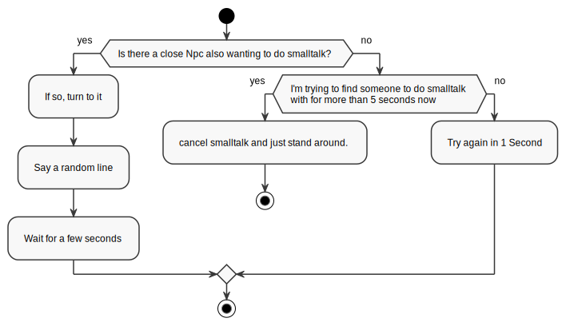

Daily Routines
As discussed in the NPC class overview, the Daily Routine is executed if
an NPC has nothing else to do. They are defined via Daedalus-scripts. For
example, this is Diegos Daily
Routine
after you talked to him at the start of the game (TA meaning Tages Ablauf,
just Daily Routine in German):
FUNC VOID Rtn_Start_1 ()
{
// Start End
TA_Sleep (23,00, 03,00, "OCR_HUT_1");
TA_SitAround (03,00, 05,30, "OCR_HUT_Z5_SIT3");
TA_Sleep (05,30, 07,00, "OCR_CAULDRON_1");
TA_SitAround (07,00, 10,00, "OCR_CAULDRON_1");
TA_Smalltalk (10,00, 12,00, "OCR_CAMPFIRE_A_MOVEMENT1"); //mit Grim
TA_SitAround (12,00, 16,00, "OCR_CAULDRON_1");
TA_Smalltalk (16,00, 18,00, "OCR_CAMPFIRE_A_MOVEMENT3"); //mit Stt_322
TA_SitCampfire (18,00, 23,00, "OCR_CAMPFIRE_A_MOVEMENT1");
};
Script functions like the one above are executed once when the NPC is spawned or has changed its Daily Routine. Each of the function calls registers its activity in the Todo-list each Npc has for the specified timespan and Waypoint, which specifies the location on where that activity should be done.
Internally, each of those
TA_something-functions maps to only one script external,TA_Min. A complete list of all possible actions is defined here.
Waypoints as rough location markers
As you can see in the code snipped above, there is an interesting comment, // mit Grim:
TA_Smalltalk(..., "OCR_CAMPFIRE_A_MOVEMENT1") // mit Grim
This says, that Diego should to Smalltalk with the Npc Grim. However, that is
just a code comment. The TA_Smalltalk activity just searches for any nearby
Npc to do smalltalk with. In Grims Daily Routine, there is a similar entry,
which makes them both go to the same location to meet there every day. Both of
them just don't know who to expect there and meet every day by "chance", which
is kinda funny.
This also applies to states where interactive items are involved. They usually just say Go to some location and see if you can find an Amboss to work on. If that is already occupied, the Npc may do something else instead.
Script States
This is a complex topic, which I need to quickly go over for daily routines. However, Script States are also used for other purposes extensively.
Each of the Daily-Routine actions registered for that Npc executes a Script State on that Npc when its time has come. For example, lets look at this line again:
TA_Smalltalk (10,00, 12,00, "OCR_CAMPFIRE_A_MOVEMENT1"); //mit Grim
On execution, this registers the Script State ZS_SMALLTALK from 10:00 to 12:00
at the location OCR_CAMPFIRE_A_MOVEMENT1 in Diegos Daily Routine.
ZS_SMALLTALK is then defined
here.
Each Script State can have the following script functionality:
- An
initfunction, called once when the state is started - A
loopfunction, called every frame while the state is active and there is nothing else to do. This function can also decide whether the state should continue. - An
endfunction, called when the state has ended.
If the time goes on and a different Daily Routine action gets activated, the current state is canceled gracefully and the next state is started.
Example
For ZS_SMALLTALK, you can break that down in the following (as seen from the
Npcs perspecitve):
Begin the state:
- Set me to slow-walkmode.
- If I am not already on a Freepoint called
SMALLTALK, let me go to the Waypoint registered in the Daily Routine. - Then, let me go to the next unoccupied Freepoint called
SMALLTALK. - Face into the direction of the Freepoint.
Then, when there is nothing else to do:

On this particular Script-State, there is not action when the state ended.
Interruptions
Execution of the Script State belonging to the current Daily Routine action is
interrupted by assigning any other Script State to the Npc, ie. when when taking
damage or talking to the Npc, which starts ZS_TALK.
Once the non-routine Script State is over and the Npc has nothing to do anymore, the Daily Routine is started again.
Weird Daily Routines
There are some gameplay elements you wouldn't think of as a Daily Routine, such as
- Following the Player
- Guiding the player to some location